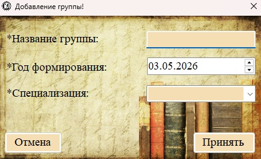
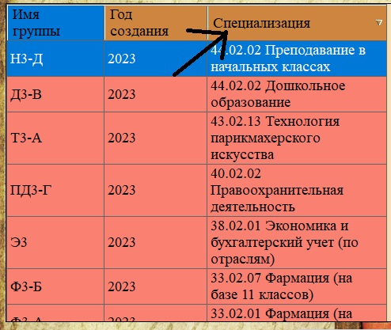

Рис. 1. Раздел «Группы» — список всех учебных групп
| Название колонки |
Описание |
| Имя группы |
Название группы (например, «Гр-1а», «П-31б», «СВ-22»). |
| Год создания |
Год формирования группы (год поступления набора). |
| Специализация |
Направление подготовки или специальность (например, «Экономика и бухгалтерский учёт», «Программирование»). |
else
Добавление новой группы

Рис. 2. Форма добавления новой группы
Поля формы:
— Название группы (обязательное) — введите уникальное название группы.
— Год формирования (обязательное) — выберите год с помощью календаря (поле со стрелками вверх/вниз).
— Специализация (обязательное) — введите или выберите из выпадающего списка направление подготовки.
— Кнопки «Принять» и «Отмена».
Особенности поля «Специализация»
Рис. 3. Выпадающий список для выбора специализации
Поле «Специализация» представляет собой выпадающий список (комбобокс), который автоматически заполняется уникальными значениями из существующих групп. Это позволяет:
— Выбрать уже существующую специализацию из списка;
— Ввести новую специализацию вручную (она добавится в список для будущих групп).
Редактирование группы

Рис. 4. Форма редактирования группы (заголовок «Изменение группы»)
Для редактирования группы:
1. Выделите строку с нужной группой в таблице.
2. Нажмите кнопку «Редактировать» (панель инструментов, контекстное меню или нижние кнопки).
3. Внесите изменения в поля формы.
4. Нажмите «Принять» для сохранения.
Удаление группы

Рис. 5. Диалог подтверждения удаления группы
Важно: При удалении группы:
— У студентов, привязанных к этой группе, значение группы станет пустым (согласно настройкам внешнего ключа ON DELETE SET NULL).
— У коробок, привязанных к этой группе, значение группы также станет пустым.
— Сама группа будет удалена из справочника.
Рис. 6. Предупреждение при удалении группы, к которой привязаны студенты
Поиск и фильтрация
Для раздела «Группы» доступны стандартные механизмы:
— Строка поиска — поиск по названию группы и специализации.
— Фильтр — можно отфильтровать группы по году формирования или по специализации.

Рис. 7. Фильтрация групп по специализации